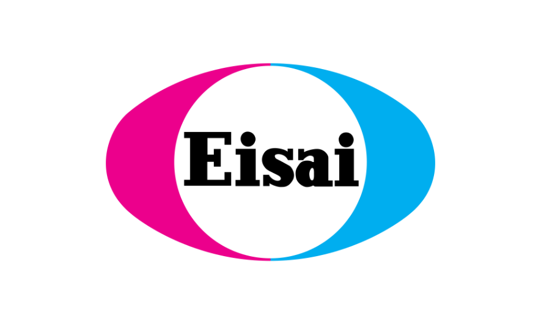
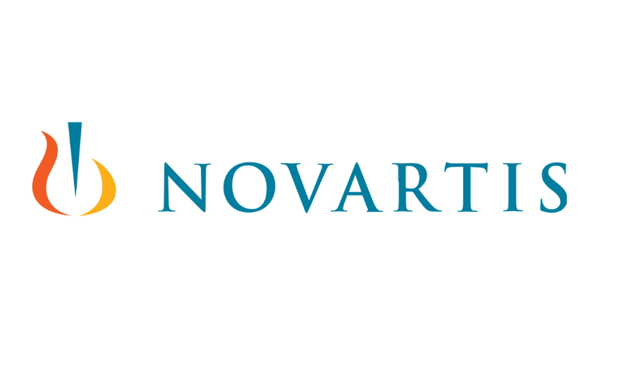

Making research and data on brain disorder available and accessible. Our Vision To make research and data on brain disorder available and accessible. We realize this vision in three ways: We conduct country studies on health system preparedness for memory care and health services. We conduct economics studies on treatment of brain disorders. We publish data on care infrastructure for brain disorders and projections of the burden of those conditions. The USC Brain Health Observatory thanks our sponsors:  